Supernatural (série de televisão)
Supernatural (bra/prt: Sobrenatural) é uma série de televisão estadunidense de fantasia sombria e urbana criada por Eric Kripke, produzida pela Warner Bros. Television em parceria com a Wonderland Sound and Vision, que estreou em 13 de setembro de 2005 na The WB Television Network, e depois tornou-se parte da programação da The CW, finalizando em 19 de novembro de 2020. A série narra a história de dois irmãos, Sam Winchester e Dean Winchester, interpretados respectivamente por Jared Padalecki e Jensen Ackles, que caçam demônios, fantasmas, monstros vampiros e outras criaturas sobrenaturais no mundo.
Eric Kripke estava desenvolvendo Supernatural há quase dez anos; na sua ideia original, os Winchesters não existiam. A história se baseava em jornalistas que relatavam em suas notícias acontecimentos sobrenaturais. Como a The WB Television Network, emissora original do programa, não aprovou a ideia, Kripke reformulou o conceito da série e teve a aprovação. Os produtores executivos originais são Kripke, McG e Robert Singer (mesmo nome do personagem da série).
As filmagens ocorriam em Vancouver, no estado da Colúmbia Britânica, no Canadá. Seu episódio piloto foi visto por mais de 5,69 milhões de telespectadores, e o índice de audiência dos quatro primeiros episódios levou ao canal The WB produzir uma primeira temporada completa de 22 episódios. Originalmente, Kripke planejou a série para três temporadas, mas posteriormente expandiu para cinco. A quinta temporada, que estreou em 10 de setembro de 2009, encerrou o enredo principal da série; no entanto, devido ao aumento da audiência da quarta e da quinta temporada, a The CW decidiu continuar a exibição de Supernatural. Em 31 de janeiro de 2019, a emissora The CW renovou a série para uma décima quinta e última temporada, contando com 20 episódios.
A série chegou ao seu episódio final no dia 19 de novembro de 2020. A temporada final teve aceitação mista por parte do "fandom".
A série é até hoje a mais duradoura da The CW e a última série das extintas emissoras The WB e UPN a ser transmitida pela atual CW.
No Brasil, a série foi exibida de 2006 a 2018 pelo SBT e é reexibida desde então pelo canal pago Warner Channel.
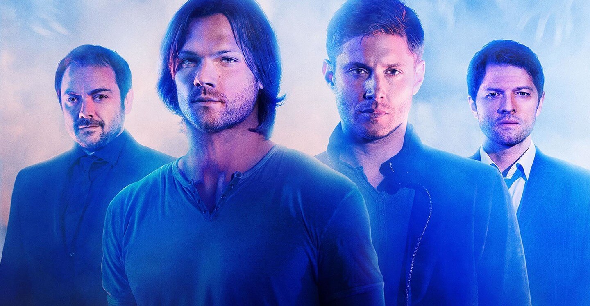Elenco Principal
(Dean)
(Sam)
(Castiel)
(Crowley)
(Bobby)
(Rowena)
Dean Winchester é um personagem fictício, um dos dois protagonistas da série de televisão de fantasia sombria e urbana estadunidense Supernatural. Ele é interpretado essencialmente por Jensen Ackles, Dean em toda a série junto com o seu irmão, Sam Winchester, investiga, combate e se envolve em diversas ocorrências sobrenaturais, baseadas majoritariamente no folclore e lendas urbanas americanas, além de seres mitológicos bíblicos 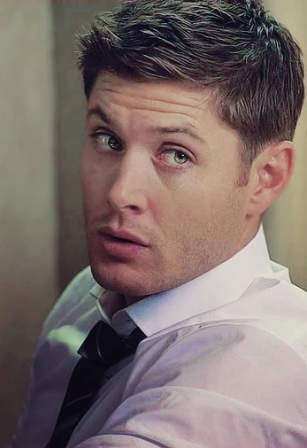 como demônios e anjos, e outros seres como monstros e fantasmas.
Dean é um caçador de seres paranormais. Quando criança, foi treinado pelo seu pai, John Winchester, para caçar e matar criaturas do sobrenatural e deixado para proteger seu irmão mais novo Sam, depois que Mary, mãe dos dois e esposa de John é morta incediada por um demônio conhecido como Azazel. Já adulto, Dean com a motivação inicial de encontrar seu pai que havia desaparecido reencontra Sam e partem para resolverem qualquer incidente ligado ao sobrenatural.
Dean é um caçador extremamente habilidoso, constantemente sendo temido por algumas criaturas que o conhecem e até por outros caçadores. Ele é bem versátil em usar vários tipos de armas de fogo, prefirindo sua pistola Colt 1911 e uma escopeta de cano serrado, sendo proficiente também com a maioria das outras armas que adquiri. Também é especialista em brigas e lutas com facas, rebaixando várias ameaças humanas com facilidade e superando criaturas fisicamente mais poderosa que ele, como metamorfos, vampiros e demônios. Dean também possui amplo conhecimento do sobrenatural e da mitologia, e a partir da quarta temporada aprende a realizar feitiços que são eficazes contra anjos.
Dean revela ser engraçado, travesso, e, em contraste com seu irmão, um pouco imaturo. Na maioria dos casos e interagindo com outros personagens, ele é bem falante e tem um senso de humor sarcástico, fazendo frequentemente piadas quando uma certa coisa ou outra acontece.Ele é afeiçoado pelo seu Chevrolet Impala 1967 dado pelo seu pai, no qual dirige e se locomove com o seu irmão a série inteira.
Sam Winchester é um personagem fictício e um dos dois protagonistas da série dramática de televisão americana Supernatural junto com seu irmão mais velho, Dean . Ele é retratado principalmente por Jared Padalecki.
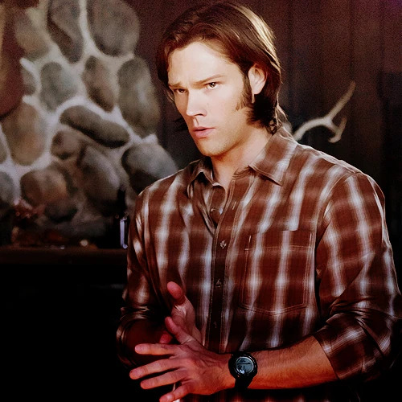Quando Sam tinha seis meses, sua mãe Mary (uma caçadora de criaturas aposentada) foi engolfada em uma grande conflagração pelo demônio de olhos amarelos Azazel (um dos quatro Príncipes do Inferno). Sua morte não foi premeditada, mas sim resultado de sua interrupção acidental da visita de Azazel ao berço de Sam durante a noite - uma opção contratual que Azazel havia adquirido com o "consentimento" de Mary anos antes de Sam nascer, e que Azazel agora estava exercendo para alimente Sam com seu próprio sangue de demônio para conceder-lhe poderes psíquicos . Sam foi salvo do incêndio doméstico que se seguiu por seu pai, que o deu a Dean, então com quatro anos, para carregá-lo para fora, mas Mary morreu tragicamente. Desde aquele evento, Dean se sentiu responsável por Sam e se tornou o protetor de fato de Sam, em grande parte devido à ausência de seu pai quando ele estava rastreando Azazel.
No início da série, Sam, de 22 anos, está no último ano de Stanford, em processo de inscrição para a faculdade de direito . Sam também tem uma namorada, Jessica, com quem mora e planeja se casar secretamente. Uma noite, no entanto, seu irmão Dean solicita sua ajuda depois que seu pai, John, desaparece. Sam eventualmente acompanha seu irmão. Depois de derrotar uma mulher de branco e descobrir uma trilha que os leva até seu pai, Sam retorna a Stanford, onde testemunha a morte de Jessica nas mãos de um demônio exatamente da mesma forma que sua mãe foi morta. Isso o incita a ir com Dean para encontrar seu pai e matar o demônio para vingar a morte de sua mãe e de seu amante.Nos episódios subsequentes, os irmãos lidam com perigosas criaturas míticas e lendas urbanas como o wendigo , Bloody Mary , e metamorfos . Durante este tempo, Sam começa a ter episódios de sonhos precognitivos e uma vez exibe telecinese .
Castiel presente na 4° temporada a diante , é um anjo caído , foi o responsável por tirar Dean Winchester do inferno, pela ordem de Deus. Era seu trabalho, prevenir que Lilith de quebrasse os 66 selos que, uma vez quebrado, liberaria Lúcifer de sua gaiola. Uma vez Castiel aprendeu que os anjos desejavam ver livre Lúcifer, 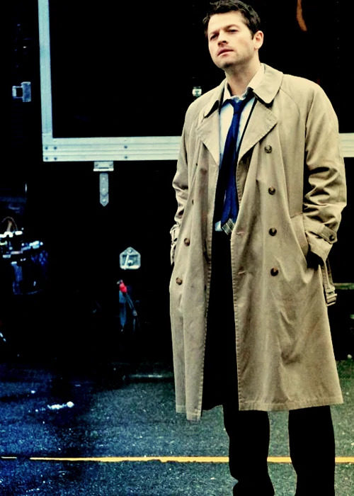 ele desafiou seus irmãos angelicais e morreu tentando ajudar Dean impedir que Sam quebrasse o último selo.
Depois que ele foi morto por Rafael, Castiel foi ressuscitado por Deus e designado como os irmãos Winchester "protetor para impedir que se tornem os vasos de Miguel e Lúcifer . Quando o Apocalipse foi evitado e depois de ser ressuscitado novamente com novos poderes, ele começou uma guerra civil no Céu para evitar Rafael de reiniciar o Apocalipse, mais uma vez. Pensando que ele não poderia ser enganado por um demônio, Castiel se juntou com Crowley para reivindicar as almas do Purgatório. Ele acabou traindo Crowley e absorveu todas as almas, resultando em seus poderes atingir o nível de um deus, mas a um preço elevado: os poderes que as almas do mal lhe concedeu mente Castiel deformado, fazendo-a se proclamar como o novo Deus .
Como um anjo, vendo a verdadeira forma de Castiel irá resultar em cegueira, como a aparência do seu rosto natural é tão grande que é capaz de queimar os olhos Humanos ou Demônio . No entanto, Castiel afirmou certa, "pessoas especiais" são capazes de tolerar sua verdadeira aparência e voz.Embora sua verdadeira forma nunca foi visto, sabe-se que ele tem duas asas de penas e sua verdadeira forma é aproximadamente o tamanho do Chrysler Building.
Para os seres humanos, eles o vêem como o aparecimento de seu receptáculo, Jimmy Novak , que é um homem médio na casa dos trinta. Ele ostenta um par de sapatos, um terno preto, uma camisa branca desabotoada-despojado de vestir, e afrouxou gravata azul acentuado por um sobre-tudo bege. Sua aparência exterior irradia uma calma natural e serenidade que faz conversa fácil e direta. Ele ocupou o corpo de Jimmy, porque ele tinha orado por ele. Desde a sua terceira ressurreição, a sua aparência mudou. Ele perdeu o sobre-tudo em cima de sua terceira morte e quando se tornou amnésico, ele usava roupas diferentes. Após recuperar suas memórias, Dean deu-lhe de volta o seu sobre-tudo.
Crowley presente na 5° á 12°. Fergus Roderick MacLeod (. C 1661-1723) foi um humano, que após a morte (Near 63 anos de idade) se tornou Crowley ; um poderoso demônio que é o Rei dos Crossroads e do Rei do Inferno , após a segunda reimprisonment de Lúcifer em sua gaiola. Embora inicialmente servido com 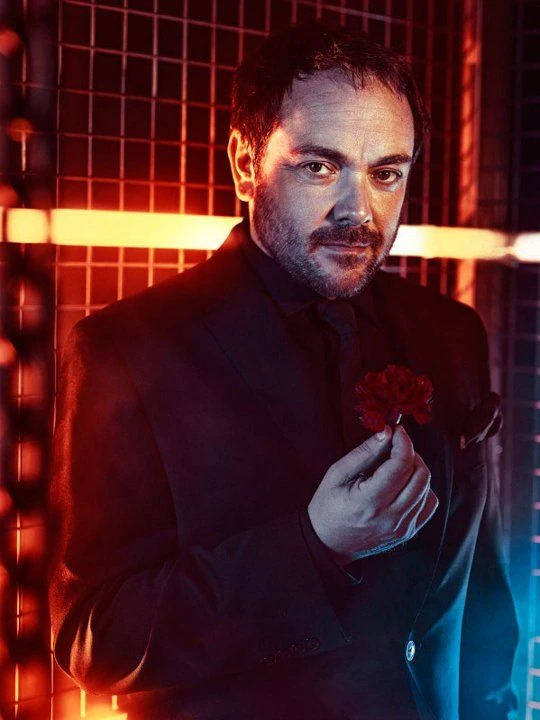 Lilith como seu braço direito, ele foi desonesto na Season 5 depois de sua morte e Lucifer release 's, ajudando os irmãos Winchester na resselagem o último de volta para sua jaula . Com o vácuo de poder no inferno desocupado, ele nomeou-se o novo rei do inferno .
O papel de Crowley é muitas vezes mudando de antagonista principal para anti-herói. Ele era um anti-herói na estação 5, um dos três antagonistas principais na estação 6, um anti-herói na estação 7, o antagonista principal de Temp 8, e um anti-herói da estação 9 e Temp 10 mais uma vez. No entanto, em todos os seus de duração como um anti-herói, ele é ainda abertamente um antagonista geralmente puxando um golpe de risco de vida sobre os Winchesters depois de ajudá-los. Ele é atualmente um dos antagonistas mais duradouros da série, perdendo apenas para Lúcifer.
Um poderoso e altamente inteligente , Crowley é um inimigo formidável, seu principal objetivo é auto-preservação, e está disposto a sacrificar qualquer coisa para garantir isso. Diferentemente da maioria dos demônios, Crowley não está acima fazer acordos ou alianças com seus inimigos quando ele sente a sua benéfico para ele.
Mesmo para um demônio, Crowley é manipuladora, uma vez segurando o posto de rei das encruzilhadas. Ele é inteligente, astuto e desonesto, capaz de manipular quase ninguém. Como Dean descreve, Crowley sempre faz todo mundo perder. Embora arrogante, Crowley não é tão tolo que ele tem vista para todos os perigos possíveis, especialmente os Winchesters, chamando-os de "demônio envolto em pesadelos"
Bobby Singer presente na 1° á 11°. Bobby cresceu em um ambiente não tão amoroso. Seu pai era um bêbado que sempre com ele e sua mãe . Um dia, quando o pai estava Bobby pegou um rifle e atirou em seu pai. As últimas palavras de 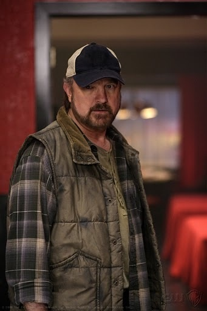 seu pai,com ele "Você quebra tudo o que você toca". Anos mais tarde, ele se casou com Karen. Três dias antes ser Karen ser possuída, os dois tiveram uma briga sobre crianças e não se falam depois. Bobby se tornou um caçador depois que ele teve que matar sua esposa Karen quando ela estava possuída por um demônio. Rufus Turner é o caçador que exorcizou o demônio e ajudou a encobrir a morte de Karen. Foi Rufus, que introduziu Bobby para o mundo do sobrenatural, e caçavam juntos por muitos anos até que um caça saiu errado em Omaha por volta de 1993. Algum tempo depois, ele conhece John Winchester, eo ajuda a cuidar de Sam e Dean . Ele leva os meninos na caça e captura e ainda brinca com Dean no parque.
Ele parece ter acumulado um pouco de conhecimento ao longo dos anos (sendo o primeiro a deduzir por conta própria que Meg estava de fato possuído), além de sua casa estar cheia de estantes e pilhas de livros sobre o mundo sobrenatural e as coisas que caçadores vão. depois de. Ele e John Winchester eram velhos amigos, embora tivessem uma queda antes do início da série.
Após a morte de John, Bobby se torna como um pai para Sam e Dean. Ele era muito leal a eles e cuidava deles profundamente como se fossem seus. Também está implícito em Você não Suporta a Verdade e O Taxista que Bobby gosta de reality shows e pedicures. Isso é um segredo, no entanto, Sam e Dean sabem.
Rowena presente na temporada 10° á 12° Rowena se considera uma bruxa "natural", alegando ter nascido com o dom da magia (em oposição a aproveitar o poder dos demônios ). Ela é, presumivelmente, imortal, como ela é conhecida 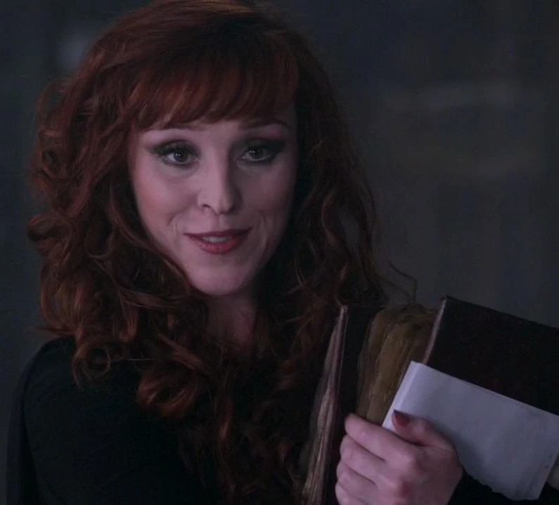 por ter sido vivo durante séculos. Ela freqüentemente usa sacos sextavadas para matar suas vítimas. Rowena criou um demônio matando feitiço em 1800 que só ela sabe como executar. Muitos dos feitiços que ela usa não são facilmente resistiu por seres humanos, e levá-los a morrer pouco depois de ser afetado. Mesmo feitiços simples, como o feitiço servidão , eventualmente, queimar as vítimas humanas, como fazem os poderosos, como o cão de ataque Mágico .
Rowena era anteriormente parte da Grande Coven , mas foi demitido por seus superiores, como resultado de seu uso violenta e contundente de magia. Mais tarde, Olivette revelou que ela ter um filho com um não-bruxa também contribuiu para a sua expulsão.
Antes de seu reaparecimento nos dias de hoje, Rowena foi brevemente mencionado por Crowley . Ele descreveu sua mãe como "imiscuir em bruxaria" e disse que ela lhe ensinou algumas coisas. No entanto, Crowley não mencionou o nome dela.
Produção
Criação e concepção
Antes de levar Supernatural para a televisão, o criador Eric Kripke tinha desenvolvido a série
durante quase dez anos,tendo sido fascinado por lendas urbanas desde que era criança.
 Apesar de ter pensado em Supernatural como um filme, passou anos tentando vender a ideia num
formato de série de televisão. O conceito passou por várias fases antes de se tornar no
produto final, e mudou de uma antologia sobre o paranormal para um grupo de jornalistas que
viajavam pelo país numa van "lutando contra demônios em busca da verdade". Kripke queria
que fosse uma série na estrada por achar que essa era "a melhor forma de contar essas histórias
porque é puro, despojado e incomparavelmente americano... Estas histórias existem em várias
pequenas cidades espalhadas por todo o país, e faz muito mais sentido chegar e ir embora destas
histórias dirigindo". Devido ao fato de já ter trabalhado anteriormente com a WB com a série
Tarzan, Kripke teve a oportunidade de propor ideias de programas ao canal, e aproveitou a
oportunidade para Supernatural. Porém, o canal não gostou da sua ideia dos jornalistas, por
isso Kripke decidiu que os personagens principais eram dois irmãos e que eles são de
Lawrence, no Kansas, devido à proximidade da cidade ao Stull Cemetery, um local famoso por suas
lendas urbanas.
Apesar de ter pensado em Supernatural como um filme, passou anos tentando vender a ideia num
formato de série de televisão. O conceito passou por várias fases antes de se tornar no
produto final, e mudou de uma antologia sobre o paranormal para um grupo de jornalistas que
viajavam pelo país numa van "lutando contra demônios em busca da verdade". Kripke queria
que fosse uma série na estrada por achar que essa era "a melhor forma de contar essas histórias
porque é puro, despojado e incomparavelmente americano... Estas histórias existem em várias
pequenas cidades espalhadas por todo o país, e faz muito mais sentido chegar e ir embora destas
histórias dirigindo". Devido ao fato de já ter trabalhado anteriormente com a WB com a série
Tarzan, Kripke teve a oportunidade de propor ideias de programas ao canal, e aproveitou a
oportunidade para Supernatural. Porém, o canal não gostou da sua ideia dos jornalistas, por
isso Kripke decidiu que os personagens principais eram dois irmãos e que eles são de
Lawrence, no Kansas, devido à proximidade da cidade ao Stull Cemetery, um local famoso por suas
lendas urbanas.
Quanto ao nome que daria aos protagonistas, Kripke decidiu que se chamariam "Sal" e "Dean" como homenagem ao romance On the Road, de Jack Kerouac. Contudo, achou que "Sal" não era o melhor nome para um personagem principal e mudou-o para "Sam". Originalmente, o último nome dos irmãos seria "Harrison" para fazer referência ao ator Harrison Ford, visto que Kripke queria que Dean tivesse "a presunção ousada e imprudente de Han Solo". Porém, havia um Sam Harrison que morava no Kansas, por isso o nome teve de ser mudado por razões legais. Para combinar o seu interesse na Winchester Mystery House e o seu desejo de dar um aspeto de "Western moderno" à série, Kripke deu-lhes o sobrenome de "Winchester". Contudo, também isto criou um problema. O nome original do pai de Sam e Dean era "Jack" e também havia um Jack Winchester no Kansas, o que forçou Kripke a mudar o nome do personagem para "John".
Kripke já tinha apresentado a série para Peter Johnson, um produtor executivo da Fox, e quando ele passou a ser presidente da Wonderland Sound and Vision, contratou Kripke. Pouco depois, Johnson envolveu-se no programa como coprodutor executivo, juntamente com McG, e a empresa de produção comprometeu-se a fazer o episódio piloto. Porém, antes do piloto começar a ser filmado, alguns problemas com o roteiro precisavam ser resolvidos. Originalmente, os irmãos não foram criados por seu pai, mas sim pelos seus tios. Assim, quando Dean pedia a ajuda de Sam no episódio piloto, tinha que convencer seu irmão sobre a existência do sobrenatural. Contudo, Kripke percebeu que desta forma o passado dos personagens principais teria sido muito complicado, e reescreveu o roteiro junto com Johnson de forma a que o pai de Sam e Dean os tivesse criado para serem caçadores. O roteiro passou por várias revisões. Uma das ideias originais era a de Jessica, namorada de Sam, ser na verdade um demônio e que tal revelação levaria Sam a juntar-se a Dean na sua viagem; contudo, Kripke achava que era mais apropriado que a motivação de Sam fosse a morte de Jessica, por isso decidiu matá-la da mesma forma que matou a mãe dos irmãos. Outro dos conceitos revistos foi o de Sam pensar que Dean era um assassino em série que matou o seu pai e seria este quem morreria em vez de Jessica. As filmagens do episódio piloto receberam luz verde após o diretor David Nutter, que já tinha trabalhado com Kripke em Tarzan, ter-se juntado ao projeto. Quando o canal comprou a série completa, o estúdio contratou Robert Singer para produtor executivo uma vez que queriam que Kripke trabalhasse com alguém com experiência. O coprodutor executivo, John Shiban, também foi contratado para a ajudar a desenvolver a mitologia da série devido ao seu trabalho em The X-Files. Kripke tinha um plano da mitologia para três temporadas, mas mais tarde expandiu-o para cinco e esperava terminar a série em alta.
Quando era mais jovem, Kripke gostava de ver séries em que o carro era um símbolo da mesma, como é o caso de The Dukes of Hazzard e Knight Rider. Isto levou-o a incluir um em Supernatural. Originalmente queria que o carro fosse um Mustang de 65, mas o seu vizinho convenceu-o a mudá-lo para um Impala de 67, uma vez que "você não pode colocar um cadáver no porta-malas" e porque "queria um carro que, quando para num sinal, faça as pessoas trancar as portas". Kripke disse, "É o Rottweiler dos carros, e eu penso que isso dá mais autenticidade aos fãs de carros por causa disso, porque não é um carro bonito. É um carro agressivo, musculoso, e eu acho que é a isso 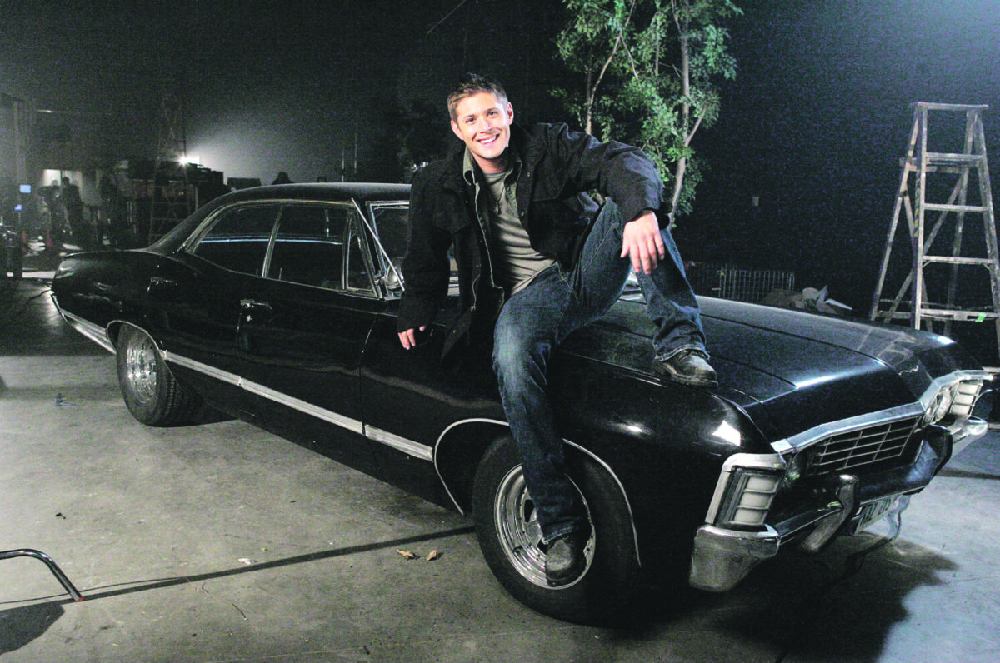 que as pessoas reagem, porque se encaixa tão bem no tom do nosso programa".
O Impala 67 é o icônico carro dos irmãos Winchester na série, e Dean Winchester é um dos personagens principais. O Impala 67 é um Chevrolet Impala modelo 1967, conhecido por ser o veículo que os irmãos Winchester usam para viajar e combater criaturas sobrenaturais na série "Supernatural". Dean Winchester, interpretado por Jensen Ackles, é um dos irmãos protagonistas da série. Ele é conhecido por seu amor pelo Impala, seu senso de humor e sua habilidade em lidar com ameaças sobrenaturais.
Protagonistas
Para interpretar os dois personagens protagonistas de Supernatural, os irmãos Sam e Dean Winchester, a escolha deu-se aos atores Jared Padalecki e Jensen Ackles, respectivamente. Kripke queria o mais 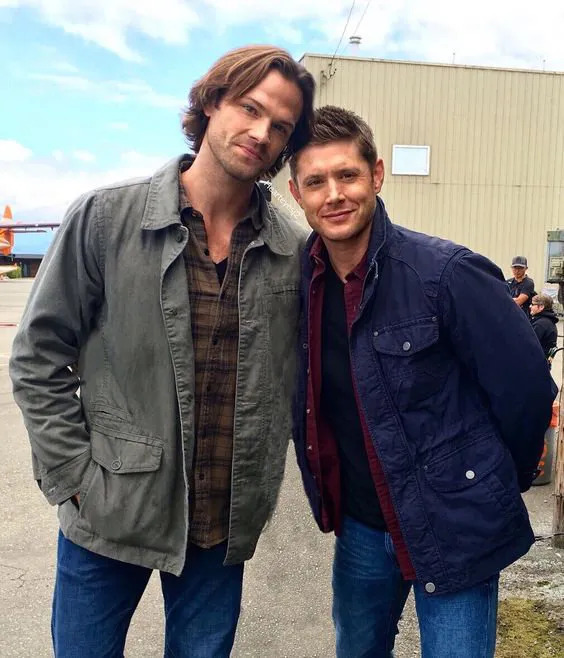 semelhante o possível a Luke Skywalker e Han Solo de Star Wars.
Padalecki conhecia os produtores executivos McG e David Nutter, os primeiros a convencê-lo para fazer um teste para o papel de Sam. O ator tornou-se interessado no papel graças ao seu gosto por séries de terror, como The X-Files e Twilight Zone, que ele achou semelhante a Supernatural. Ele também estava animado para interpretar "o herói relutante", comparando Sam a personagens como Neo de Matrix e Luke Skywalker de Star Wars.
Ackles foi originalmente convidado por Nutter para fazer um teste para o papel de Sam, mas o ator preferiu o personagem de Dean após ler o roteiro.
Música
A série apresenta uma síntese de incisão orquestral, apesar dos instrumentos reais, como violões e violoncelos serem usados raramente. Ao contrário de outros programas de televisão, Supernatural apresenta dois compositores: Christopher Lennertz e Jay Gruska. Eles escrevem temas para os seus próprios episódios e personagens e, trabalham um com o outro se há sobreposição entre os episódios. Enquanto canções originais são usadas em todos os episódios, um outro aspecto importante da série é o "Rock Clássico", que o criador Eric Kripke ameaçou encerrar por conta do elevado preço para adquirir direitos autorais. A maioria das canções é da coleção particular de Kripke, e uma de suas bandas favoritas, o Led Zeppelin, seja muito caro para usar, optou-se por bandas como Blue Öyster Cult e AC/DC, em mais de uma ocasião e Bon Jovi em apenas uma ocasião. Várias músicas são normalmente utilizadas ao longo de cada episódio, embora Kripke prefira manter uma linha fina entre a orquestra e as canções utilizadas. Por vezes Lennertz e Gruska são obrigados a escrever seções curtas de Rock para preencher lacunas de quinze a vinte segundos, devido ao alto custo para adquirir direitos autorais de músicas. Normalmente, no último episódio de cada temporada, a música "Carry On Wayward Son", de Kansas, é tocada no início.
Local das filmagens
Embora o episódio piloto tenha sido filmado em Los Angeles, as filmagens principais tem lugar em Vancouver, na Columbia Britânica. Assim, as filmagens em locação geralmente ocorrem na área. O episódio "Dead in the Water" foi filmado no lago Buntzen, e as cenas finais do episódio "Simon Said" foram filmados na barragem Cleveland. Outros locais utilizados em Supernatural são muitas vezes reutilizados duas ou três vezes, com o departamento de arte fazendo alterações para dissimular isso. O parque Heritage em Burnaby tem sido usado como um cemitério no episódio "Red Sky at Morning", e como a localização da casa do pão de gengibre no episódio "Bedtime Stories". Além disso, o hospital Riverview em Coquitlam tem servido muitos cenários para a série, incluindo um asilo no episódio "Asylum", um hospital no episódio "In My Time of Dying", e uma prisão no episódio "Folsom Prison Blues". Por causa dos episódios ocorrerem geralmente no meio do nada, as filmagens realizam-se muitas vezes em uma antiga base militar. Depois de ter sido fechada por anos, os edifícios foram removidos, deixando apenas as estradas em que conjuntos são erguidos, como para cenas em encruzilhadas.
Impacto
Audiência
Após os quatro primeiros episódios de Supernatural exibido em 2005, The WB decidiu encomendar a série para uma temporada completa de 22 episódios. Durante esses primeiros episódios, a série ficou em terceiro lugar em homens com idade entre 18-34 e 12-34. Também registou um aumento de 73% nos homens com idades compreendidas entre os 18 e os 49 anos em relação ao ano anterior, embora apenas ganhasse 4% no total de telespectadores, e manteve 91% dos telespectadores de Gilmore Girls. Supernatural teve avaliações baixas durante sua segunda temporada, com os espectadores consistindo principalmente de meninas adolescentes, e The CW tentando atrair mais espectadores masculinos. O futuro da série estava em dúvida no final da segunda temporada. Apesar das avaliações medíocres no ano precedente, ela estava de volta para uma terceira temporada.[95] Embora a classificação de sua terceira temporada foi baixa, ela fez bem com os espectadores com idade entre 18-49 anos. Nesta categoria, classificou a oitava de todas as séries de retorno transmitidas por uma grande rede.[96] A série recebeu uma encomenda adiantada para sua quarta temporada.[97] As classificações da série aumentaram em sua quarta temporada. A estreia da quarta temporada foi ao ar em 18 de setembro de 2008, com a média de sua audiência mais alta desde sua estreia no The CW com 3,96 milhões de telespectadores, 33% na estreia da temporada e 1,7 / 5 nos adultos de 18-49, 42 % do ano anterior. Em 16 de outubro de 2008, a série foi vista por 3,06 milhões de espectadores, fazendo a menor audiência da temporada. Em 30 de outubro de 2008, a série subiu para seu melhor desempenho em adultos 18-34 (1,4 / 4), adultos 18-49 (1,5 / 4) e espectadores total (3.6 mil) desde a sua estreia na temporada em 18 de setembro de 2008. Para a estreia da quinta temporada, a audiência aumentou 6% nas mulheres de 18-34 (1,7 / 5) durante a estreia da quarta temporada. No entanto, Tendo em conta as visualizações DVR com os novos dados do Live-Plus 7 Day, a audiência total para a estreia aumentou 38%, com mulheres de 18-34 aumentando em 35% e adultos de 18-34 em 47%.
Prêmios
À exceção da argumentista Raelle Tucker que recebeu o Constellation Award de "Melhor Argumento de Ficção Cientifica de 2007" pelo episódio "What Is and What Should Never Be", a série, o elenco e a equipe técnica já foram nomeados várias vezes. O episódio piloto foi nomeado para dois Emmy em 2006, o compositor Christopher Lennertz foi nomeado na categoria de Melhor Banda Sonora Dramática. Os editores de som receberam uma nomeação de Melhor Edição de Som. Os mesmos foram mais tarde nomeados na mesma categoria em 2008 pelo episódio "Jus in Bello". O episódio piloto também foi nomeado para um Golden Reel Award na categoria de Melhor Edição de Som de Televisão. Os episódios "Salvatin" e "All Hell Breaks Loose, Part 2" foram nomeados na mesma categoria em 2007 e 2008. Além disso, a série também foi nomeada para um Saturn Award na categoria de Melhor Série em Canal Aberto em 2006, 2008 e 2009.
Também teve nomeações nos Teen Choice Awards de 2006 nas categorias de Programa de TV Revelação e Estrela de TV Revelação (Jensen Ackles). Vários anos mais tarde, a série foi nomeada para Série de televisão de Fantasia ou Ficção Científica. Jared Padalecki recebeu uma nomeação na categoria de Ator de televisão: Drama em 2007. Em 2009, a série foi nomeada para um People's Choice Award na categoria de Série de Ficção Científica ou Fantasia Preferida e também para um prêmio GLAAD na categoria de Melhor Episódio Individual (numa série sem uma personagem homossexual regular) pelo episódio da terceira temporada "Ghostfacers", acabando por vencer o People's Choice Award em 2010. O elenco não regular da série também já recebeu várias nomeações.
Em 2007, Colby Paul foi nomeado para um Young Artist Award na categoria de Melhor Ator de televisão (Comédia ou Drama) - Ator Convidado seguido em 2008 por Nicholas Elia na mesma categoria pelo episódio da terceira temporada "The Kids Are Alright" e Conchita Campbell pelo episódio "Playthings". Jessica Harmon foi nomeada em 2008 para um Leo Award na categoria de Melhor Atriz Convidada Numa Série de Drama pelo episódio da segunda temporada "All Hell Breaks Loose, Part 1", assim como Mandy Playdon que foi nomeada no ano seguinte pelo episódio "Family Remains". Em 2010 Os Constellation Awards nomearam Jensen Ackles e Misha Collins para Melhor Ator num Episódio de Ficção Cientifica de 2009 (pelos episódios da quinta temporada "The End" e "The Rapture", respectivamente), Alona Tal para Melhor Atriz Num Episódio de Ficção Científica de 2009 (pelo episódio "Abandon All Hope") e Sobrenatural para Melhor Série de Ficção Científica de 2009. No final de 2010, Sobrenatural venceu a capa da revista TV Guide, e no início de 2012 a série é indicada para duas categorias no People's Choice Awards, ganhando ambas. Em 2015, Misha Collins e Jensen Ackles levam o award do Teen Choise para Melhor Química da televisão, pelo casal não-oficial "Destiel".
Fandom
Sendo uma série cult, Supernatural tem atraído uma base de fãs dedicada. O Fandom é ativamente online na Internet, em redes sociais e forúns e muitos têm escrito histórias fanfic sobre a série. Os roteiristas referenciaram isto várias vezes na série, incluindo o 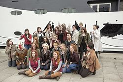 episódio 200, que faz referências a Wincest, Destiel e Sastiel. As primeiras convenções de fãs dedicados a Supernatural ocorreram em Nashville, Tennessee, em outubro de 2006 e em Londres em maio de 2007, e as convenções desde então se expandiram para a Alemanha e em todo os Estados Unidos. As estrelas da série e grande elenco convidado fazem aparições, com os fãs dos Estados Unidos, Europa, China e Austrália participando.
Antes da estreia da quinta temporada da série, em que Lúcifer é finalmente libertado de sua prisão, os fãs tentaram promover o show através do Twitter. Muitos fãs postaram a hashtag "#LuciferIsComing" que a transformou em "tópicos de tendências" - uma lista retratando palavras e frases publicadas com a maior frequência no site. No entanto, os usuários do Twitter que não sabiam das intenções dos fãs responderam com vários posts de "#GodIsHere", e o tópico foi bloqueado dos tópicos de tendências do Twitter após reclamações. O ator Misha Collins, que interpreta Castiel na série, tentou continuar a campanha pedindo que os fãs publicassem "#PDiddyIsScaredOfHisTV", sendo o rapper P. Diddy o que muitos fãs acreditam ser o instigador da repercussão inicial. No entanto, depois de uma hora, esta tentativa de tendência do tema também foi bloqueada pelo Twitter.
Outras mídias
Mercadoria
Supernatural tem uma vasta quantidade de mercadoria disponível, incluindo calendários, camisetas, copos de doses, tatuagens temporárias e cartazes. Inkworks lançou cromos da série, algumas cartas com autógrafos de atores e amostras de trajes reais usados na série.
O Supernatural Role Playing Game (um jogo de RPG de mesa) foi desenvolvido por Margaret Weis Productions, Ltd. Originalmente programado para lançamento em outubro de 2007, foi adiado até agosto de 2009. O jogo usa material da série, novelas e quadrinhos. Além disso, em 7 de setembro de 2010, Watertower Music lançou Supernatural: Original Television Soundtrack - Seasons 1-5. Apresenta 18 trilhas originais por compositores da série Christopher Lennertz e Jay Gruska. Funko também lançou três figuras de ação Pop! de Dean, Sam e Castiel em 21 de novembro de 2013
Quadrinhos
A série também tem desenvolvido um universo expandido. Quatro minissérie de seis edições foram publicados pela editora de histórias em quadrinhos Wildstorm, uma subsidiária da DC Comics.
- Supernatural: Origins retrata o início da vida de John, Sam e Dean Winchester, e mostra como John se tornou um caçador
- Supernatural: Rising Son, "uma história de família disfuncional", detalha Dean quando ele começa a seguir os passos de seu pai.
- Supernatural: Beginnings End mostra os acontecimentos definitivos que levaram Sam a deixar sua família para participar de Stanford.
- Supernatural: Caledonia, nomeado Supernatural: The Dogs of Edinburgh, no Reino Unido, mostra a viagem de Sam Winchester para o Reino Unido enquanto está em Stanford.
As duas primeiras minisséries, Origins e Rising Son, foram escritas por Peter Johnson, um dos coprodutores executivos da série de televisão, enquanto a terceira, Beginnings, foi escrita pelos roteiristas da série de televisão Andrew Dabb e Daniel Loflin. O quadrinista Geoff Johns foi responsável pela backup story da primeira edição de Origins. Embora Kripke foi fortemente envolvido com Origins, a greve dos roteiristas o impediu de ter o mesmo envolvimento com Rising Son. A quarta e última minissérie, Caledonia, foi escrita pelo aclamado escritor Brian Wood.
Romances
Vários romances baseados na série foram também publicados.
| Título | Escritor | Publicação | Publicação |
|---|---|---|---|
| Nevermore | Keith R.A. DeCandido | 31 de julho de 2007 | HarperEntertainment |
| Witch's Canyon | Jeff Mariotte | 30 de outubro de 2007 | HarperEntertainment |
| Bone Key | Keith R.A. DeCandido | 26 de agosto de 2008 | Titan Books |
| Heart of the Dragon | Keith R.A. DeCandido | 16 de fevereiro de 2010 | HarperEntertainment |
| The Unholy Cause | Joe Schreiber | 4 de maio de 2010 | Titan Books |
| The War of the Sons | Rebecca Dessertine e David Reed | 31 de agosto de 2010 | Titan Books |
| One Year Gone | Rebecca Dessertine | 24 de maio de 2011 | Titan Books |
| Coyote's Kiss | Christa Faust | 12 de julho de 2011 | Titan Books |
| Night Terror | John Passarella | 13 de setembro de 2011 | Titan Books |
Spin-offs
Durante a produção da terceira temporada de Supernatural, Kripke e os roteiristas às vezes discutiam a possibilidade de uma série prequela, ou seja, que se passasse antes do enredo da série principal. O spin-off mostraria as aventuras de Samuel Colt e um grupo de caçadores no Velho Oeste. Kripke disse, "Quem sabe, talvez um dia eu vou ser capaz de contar essa história."
Ghostfacers
Dada a crescente popularidade dos personagens de Ed Zeddmore e Harry Spangler, Kripke considerou um spin-off dedicado aos Ghostfacers (No Brasil, Os Encara-Fantasmas), um grupo amador de caça sobrenatural. Ele discutiu a ideia com os atores A.J Buckley e Travis Wester, e teve uma reunião bem sucedida com os produtores executivos da The CW. Embora Kripke anunciou planos para produzir uma websérie durante a Comic-Con de 2008, a greve dos roteiristas atrasou a produção até 2009.
Buckley e Wester, juntamente com Patrick J. Doody e Chris Valenziano, escreveram a série. Eles constataram o formato de dez segmentos de três minutos[140]—difícil de dirigir, pois cada webisódio tinha que trabalhar tanto individualmente como parte do enredo geral. No entanto, Wester observou: "Nós não poderíamos ficar muito indulgente, não poderíamos aprofundar longas conversas. Isso ajuda não só com a narração de histórias, mas com a comédia... Com drama, é preciso tempo para estabelecer uma conexão emocional com os personagens. Com comédia, você pode saltar para a direita." A série também é estrelada por Brittany Ishibashi como Maggie e Austin Basis como Spruce. Embora uma ideia inicial de Kripke envolvia o elenco em busca de reais casas assombradas, a websérie apresenta os Ghostfacers investigando um teatro que acredita-se ser assombrado pelo fantasma de uma jovem (interpretada por Kelly Carlson).
Em 23 de outubro de 2011, AJ Buckley postou em sua conta no Twitter uma ligação para um webisódio especial onde os Ghostfacers conhecem Castiel.
Supernatural: The Animation
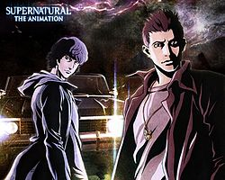Em 9 de junho de 2010, o site oficial da Warner Bros. do Japão anunciou uma versão em anime da série intitulada Supernatural: The Animation (スーパーナチュラル・ザ・アニメーション), que estreou no Japão em janeiro de 2011. A série foi produzida pelo conhecido estúdio de animação japonês Madhouse, o mesmo que criou Death Note. Shigeyuki Miya e Atsuko Ishizuka foram os diretores e Eric Kripke recebeu créditos como criador do projeto. O cofundador da Madhouse, Masao Maruyama foi o produtor executivo, Naoya Takayama supervisionou os roteiros e Takahiro Yoshimatsu desenhou os personagens. Yūya Uchida e Hiroki Touchi, que dão as vozes de Sam e Dean na dublagem japonesa da série em live action, reprisam seus respectivos papéis.
A série de anime teve uma temporada de 22 episódios; a história abrange as primeiras duas temporadas da série em live action, mas também incluem algum material original que explora a infância dos Winchester, o desenvolvimento de alguns personagens secundários e vilões exclusivos para o anime. A Warner Home Video lançou os primeiros dois episódios em Blu-ray e DVD no Japão em 23 de fevereiro de 2011; os episódios a partir do terceiro e até ao décimo-segundo foram lançados em 9 de março de 2011 e os restantes no dia 27 de abril. Jared Padalecki dublou Sam na dublagem em inglês do anime, enquanto Jensen Ackles dublou Dean apenas nos dois últimos episódios, por razões de programação; Andrew Farrar dublou Dean nos 20 primeiros episódios.